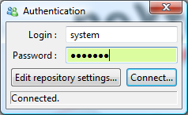
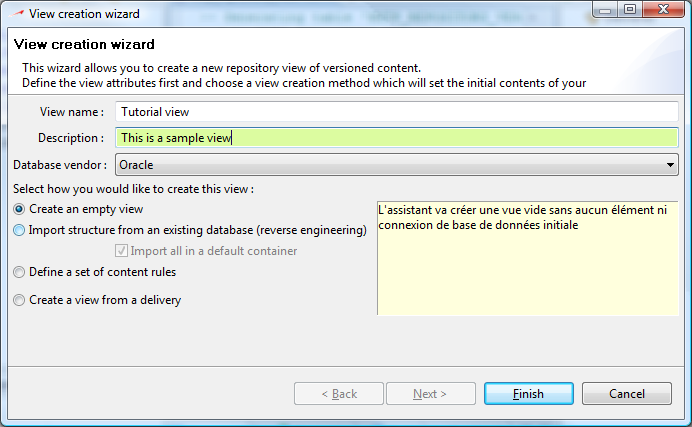

The launcher is the first popup dialog which comes up when you start designer. It allows you to define the connection to the repository and to select the view in which you will work.
A view is the definition of the elements which will be visible to the user. Each element has a version and a view always references elements in a specific version.
The first time you run Designer, the repository connection has not been defined so click on Edit repository settings and a specific dialog will be shown which allows you to define your repository connection :
Enter the settings of the database schema in which the repository has been deployed and click connect. If the settings are invalid, you will not be able to logon and the status line will indicate the error returned by your database provider.
Logon to the repository using the default user / password : system / manager.

Click connect. Once the repository connection is established, all existing views will be displayed. Since it is our first time, an empty list will be shown. Click on “Create a new view” to display the view editor :

Click OK to create the view. You will now see it in the view selector. Select the view and click OK to launch Designer.
The detailed sections about repository and version views can be found at :